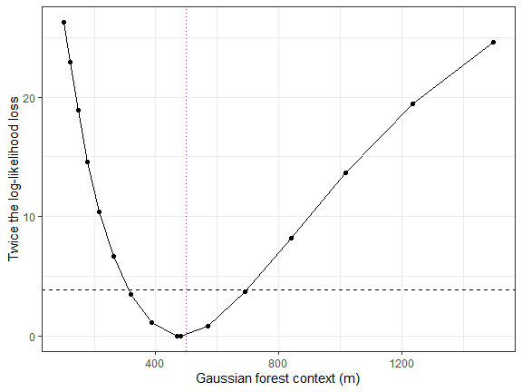
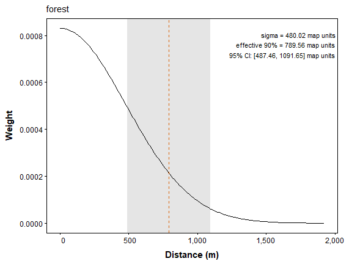
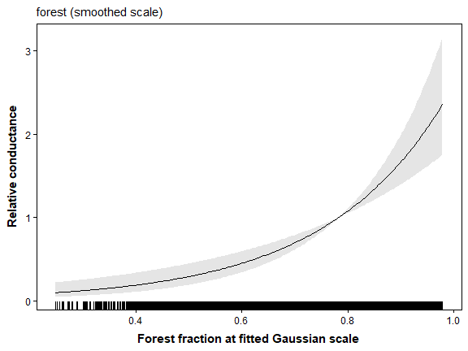
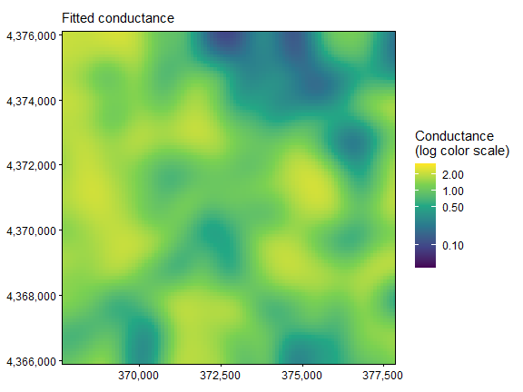
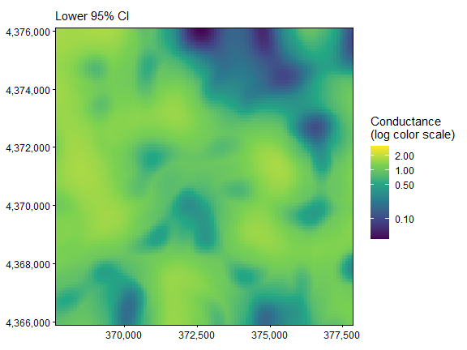
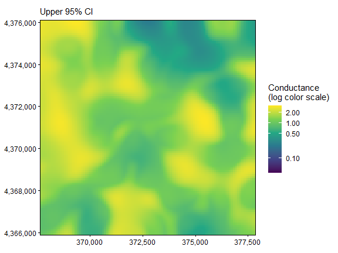
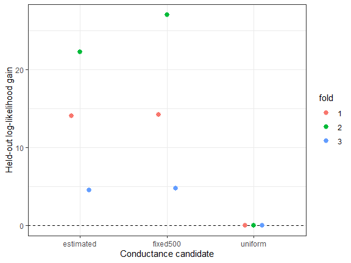

07. Gaussian Scale Optimization
Bill Peterman
Source:vignettes/v07-gaussian-scale-optimization.Rmd
v07-gaussian-scale-optimization.RmdThe displayed results and figures in this guide were computed from
the executable R Markdown source shipped with the package. Routine
package checks use these precomputed results to keep the CRAN check time
modest. To rerun every code chunk, copy
system.file("vignette-source", "v07-gaussian-scale-optimization.Rmd", package = "terradish")
to a writable directory and render that copy with
rmarkdown::render().
Goal. Estimate the forest neighborhood in meters, read its uncertainty, and compare its predictions with those of a fixed neighborhood.
vignette("v12-data-generation", package = "terradish")
explains the landscapes, SLiM histories, sampling, and matched markers
used in these examples.
What question does a Gaussian scale answer?
A single 100 m cell may not capture the forest context that matters
to gene exchange. A Gaussian smoother averages neighboring cells,
weighting nearer cells more, and its standard deviation,
,
sets how broadly forest is averaged. terradish estimates
that scale jointly with the conductance association. Start with vignette("v01-getting-started", package = "terradish")
for genotype construction and the resistance-graph workflow.
This guide uses the same 24 Ohio ponds and 2,500 SNPs, simulated with a 500 m forest context (five cells on the 100 m grid). Do the genetic data support a similar context, and does estimating it improve prediction? The smoothing scale describes a raster transformation in this model, not necessarily a dispersal distance, home range, or barrier width.
Optional: what the Gaussian smoother computes
For each candidate scale, the model smooths the raw forest fraction and standardizes the result over the retained landscape:
Here is raw forest fraction, is map distance between cells, and is the standardized smoothed value. The kernel is finite and its available weights are renormalized, so boundary behavior and raster extent matter. The simulation used the same convention.
Rebuild the shared response and graph
library(terradish)
library(terra)
library(ggplot2)
data(ohio_ponds)
ponds <- ohio_ponds$ponds
samples <- ohio_ponds$samples
groups <- factor(samples$pond, levels = ponds$pond)
N <- 2 * as.numeric(table(groups))
stopifnot(all(N == N[1]))
S <- cov_from_biallelic(rowsum(ohio_ponds$snp, groups, reorder = FALSE)[ponds$pond, , drop = FALSE], N) / N[1]
# Retain raw forest for estimated smoothing, and the known fixed context
# for a comparison on the identical graph. Neither layer is standardized here.
x <- c(unwrap(ohio_ponds$covariates)[["forest"]],
unwrap(ohio_ponds$forest500))
surface <- conductance_surface(x, ponds[c("x", "y")], directions = 8)
terra::res(x)
#> [1] 100 100
range(terra::values(x[["forest"]]))
#> [1] 0 1How to read the output. Map units are meters, and
raw forest is a fraction from 0 to 1. Supply it unsmoothed, because the
Gaussian model smooths and standardizes it at every candidate scale, and
pre-smoothing would change the scale being estimated. Skip
scale_covariates(), which would give the same fit and
obscure the units.
The fixed forest500 layer stays on its raw
fraction scale, so its coefficient is per unit fraction, while
the Gaussian coefficient is per one SD after smoothing. Both models
share the response and graph, so their fit and predictive scores remain
comparable.
Set interpretable scale bounds and fit
gaussian_model <- gaussian_smoothed_loglinear_conductance(surface,
scale_vars = "forest", sigma_lower = 100, sigma_upper = 1500)
control <- NewtonRaphsonControl(maxit = 200, ctol = 1e-8, ftol = 1e-8)
fit_gaussian <- terradish(S ~ forest, surface,
conductance_model = gaussian_model,
measurement_model = wishart_covariance, nu = 40,
theta = c(forest = 1, sigma.forest = 500),
optimizer = "bfgs", control = control)
summary(fit_gaussian)
#> Conductance surface with 10404 vertices (24 focal) estimated by maximum likelihood
#> Call: terradish(formula = S ~ forest, data = surface, conductance_model = gaussian_model,
#> measurement_model = wishart_covariance, nu = 40, theta = c(forest = 1,
#> sigma.forest = 500), optimizer = "bfgs", control = control)
#>
#> Loglikelihood: 141.3347 (4 degrees freedom)
#> AIC: -274.6694
#>
#> Number of function calls: 24
#> Number of optimization steps: 9
#> Convergence: converged | projected gradient: 4.65e-10
#> Norm of gradient at MLE: 4.653653e-10
#>
#> Gaussian scales (map units; no Wald test against zero):
#> layer estimate SE lower_bound upper_bound near_bound
#> forest 480.0157 93.70678 100 1500 FALSE
#> near_bound marks estimates within 1% of a bound.
#>
#> Nuisance parameters (conditional on fitted conductance surface; measurement-model scale):
#> Estimate Std. Error Lower 95% Upper 95%
#> tau 1.4993 0.1908 1.1254 1.8731
#> sigma -3.3796 0.7236 -4.7977 -1.9614
#>
#> Coefficients:
#> Estimate Std. Error z value Pr(>|z|)
#> forest 0.5884 0.1039 5.66 1.51e-08 ***
#> sigma.forest 480.0157 93.7068 NA NA
#> ---
#> Signif. codes: 0 '***' 0.001 '**' 0.01 '*' 0.05 '.' 0.1 ' ' 1
#>
#> Correlation of Coefficients:
#> forest
#> sigma.forest -0.3940096
fit_gaussian$convergence
#> $code
#> [1] 0
#>
#> $message
#> [1] "converged"
#>
#> $iterations
#> [1] 9
#>
#> $max_abs_projected_gradient
#> [1] 4.653466e-10
#>
#> $criterion
#> [1] "projected_gradient"
#>
#> $boundary
#> [1] FALSE
#>
#> $restarted
#> [1] FALSE
fit_gaussian$fit$subproblem$convergence
#> [1] 0The 100 to 1,500 m bounds span one to 15 cells and include the simulated context. Set bounds from the raster resolution, domain, and question before interpreting the fit. Scales much smaller than a cell are hard to distinguish, and very broad scales flatten local variation. An estimate at a bound calls for checking identification and the landscape, not for reporting an ecological threshold.
How to read the output. Both convergence codes
should be zero. The table below locates each parameter. Each smoothed
layer gets a scale named sigma.<layer>, in meters. Do
not confuse sigma.forest with the measurement parameter
sigma.
| Parameter | Where it appears | What it measures |
|---|---|---|
forest (theta) |
coef(fit_gaussian) |
Change in log conductance per SD of smoothed forest |
sigma.forest |
coef(fit_gaussian), meters |
Width of the forest neighborhood (Gaussian sigma) |
tau |
summary(fit_gaussian)$phi |
Weight of the graph covariance |
sigma |
summary(fit_gaussian)$phi, log scale |
Log of the extra variance added to each pond |
nu |
Supplied by you | Assumed information in S, here 40 |
scale_table <- gaussian_scale_summary(fit_gaussian, probabilities = c(0.5, 0.9))
scale_table
#> covariate sigma sigma_lower sigma_upper sigma_internal sigma_conversion
#> 1 forest 480.0157 100 1500 4.800157 100
#> sigma_conversion_mode native_unit sigma_cells_x sigma_cells_y axis_50
#> 1 cell map_units 4.800157 4.800157 323.7657
#> radial_50 axis_90 radial_90
#> 1 565.1753 789.5556 1030.097
c(estimated_context_m = coef(fit_gaussian)[["sigma.forest"]],
simulated_context_m = ohio_ponds$simulation$forest_sigma_m,
conductance_ratio_per_SD = exp(coef(fit_gaussian)[["forest"]]))
#> estimated_context_m simulated_context_m conductance_ratio_per_SD
#> 480.015731 500.000000 1.801026How to read the scale summary. The fitted scale is
sigma = 480 m (4.8 cells), close to the simulated 500 m. Half of the
kernel weight lies within 565 m of a cell (radial_50) and
90% within 1030 m (radial_90), so each cell’s smoothed
forest value mostly reflects forest within about 1 km. The forest
coefficient is on the log scale: a cell one SD above the landscape
average has 1.8 times the conductance of an average cell.
This fit starts at 500 m. With your own data, try several starting scales across the bounds, record their convergence, and resolve any log-likelihood disagreement before you interpret a profile.
Optional: axis and radial distances are different summaries
sigma_cells_x and sigma_cells_y express the
estimate in raster cells. axis_* distances hold the stated
central probability of an ideal one-dimensional Gaussian, and
radial_* distances hold it within a circle for an ideal
two-dimensional Gaussian:
At 90%, the radial distance is about and the axis distance about . Both describe an ideal kernel, not movement quantiles or the weights retained where a raster boundary clips the kernel.
Inspect scale uncertainty with a likelihood profile
A standard error assumes symmetric uncertainty, so it can miss a lopsided likelihood or an estimate near a bound. A likelihood profile instead fixes the scale at a series of values and reoptimizes all other parameters at each one.
profile <- gaussian_scale_profile(fit_gaussian, "forest", n = 15)
profile$interval
#> lower upper
#> 310.9080 697.2514
# The returned fit stores this profile interval for its scale parameter.
profile_fit <- profile$fit
confint(profile_fit)
#> 2.5 % 97.5 %
#> forest 0.3846334 0.7920802
#> sigma.forest 310.9080153 697.2513966
#> attr(,"note")
#> [1] "Stored Gaussian profile intervals are used where available; remaining scale intervals are truncated Wald intervals."How to read the interval. The 95% profile interval
runs from about 311 to 697 m under nu = 40 and contains the
simulated 500 m. It extends farther above the estimate than below, so
report this interval, not a standard error, for scale. An endpoint at
sigma_lower or sigma_upper means the data
cannot exclude scales beyond that bound. If any profile point fails to
converge or finds a better optimum than the fit, refit before you report
the interval.
profile_plot <- transform(profile$grid,
loss = 2 * (as.numeric(logLik(fit_gaussian)) - logLik))
ggplot(profile_plot, aes(sigma, loss)) +
geom_line() + geom_point(size = 1.5) +
geom_hline(yintercept = qchisq(0.95, 1), linetype = 2) +
geom_vline(xintercept = 500, color = "#0072B2", linetype = 3) +
theme_bw() + labs(x = "Gaussian forest context (m)",
y = "Twice the log-likelihood loss")
How to read the plot. A clear interior minimum means these data can distinguish the forest scale. A flat curve would mean many scales have similar support. The grid traces the shape, but the interval endpoints come from additional fits. Because broader context also changes the raster SD, interpret the conductance coefficient jointly with scale.
plot(profile_fit, type = "sigma") +
labs(x = "Distance (m)") +
theme(plot.margin = margin(6, 18, 6, 6))
View conductance at the fitted scale
The kernel plot shows the neighborhood used to smooth forest. The marginal plot shows how forest, averaged over that neighborhood, relates to fitted conductance.
plot(profile_fit, type = "marginal", data = surface,
marginal_covariates = "forest") +
labs(x = "Forest fraction at fitted Gaussian scale", y = "Relative conductance")
How to read the curve. Its shape describes forest
amount, while sigma describes how broadly forest was
averaged. The band conditions on the fitted sigma, so it omits scale
uncertainty, which the profile above addresses.
maps <- plot(profile_fit, type = "surface", data = surface)
C <- conductance(surface, profile_fit)
map_limits <- range(terra::values(C), na.rm = TRUE)
# Keep all cells and share limits across the estimate and both bounds.
for (p in maps) {
print(p + scale_fill_viridis_c(
trans = "log10", limits = map_limits,
breaks = c(0.01, 0.1, 0.5, 1, 2, 5, 10, 20),
name = "Conductance\n(log color scale)"
))
}


As in Getting Started, the three panels share one logarithmic color scale. The broad pattern matches the fixed 500 m map there, as expected from a fitted scale near 500 m.
Compare estimated and fixed context
fit_uniform <- terradish(S ~ 1, surface,
measurement_model = wishart_covariance, nu = 40,
optimizer = "bfgs", control = control)
fit_fixed <- terradish(S ~ forest500, surface,
measurement_model = wishart_covariance, nu = 40,
optimizer = "bfgs", control = control)
aic_table(list(fit_uniform, fit_fixed, fit_gaussian),
mod_names = c("uniform", "fixed500", "estimated"))
#> model K AIC Delta_AIC AIC_wt Cum.wt loglik converged boundary
#> 2 fixed500 3 -276.6249 0.0000 0.7267 0.7267 141.3124 TRUE FALSE
#> 3 estimated 4 -274.6694 1.9555 0.2733 1.0000 141.3347 TRUE FALSE
#> 1 uniform 2 -203.5238 73.1011 0.0000 1.0000 103.7619 TRUE FALSEHow to read the table. Both forest models beat
uniform conductance by more than 70 AIC units. The estimated-scale model
nearly matches the log-likelihood of the true 500 m layer, so its
Delta_AIC of about 2 is the penalty for one extra
parameter. Models within 2 AIC units of the best usually have comparable
support, but that rule does not credit a parameter that leaves the
log-likelihood almost unchanged (141.33 against 141.31 here). Read this
table as “estimating the scale costs one parameter and fits no better
than the true layer”, not as support for a second model. With field data
the true scale is unknown, which is why you estimate it.
Evaluate prediction in whole held-out ponds
The three provided blocks keep whole ponds together, because an ordinary pairwise split would leak shared-site information. First verify that no immediate pedigree relationships cross blocks. If any do, redefine the blocks or purge related training samples before fitting.
animal_fold <- ponds$fold[match(samples$pond, ponds$pond)]
relations <- lapply(seq_len(nrow(samples)), function(i)
setdiff(unlist(samples[i, c("pedigree_id", "parent_1", "parent_2")]), -1))
cross_block_kin <- sum(vapply(seq_len(nrow(samples) - 1L), function(i) {
j <- seq.int(i + 1L, nrow(samples))
sum(vapply(j[animal_fold[j] != animal_fold[i]], function(k)
length(intersect(relations[[i]], relations[[k]])) > 0, logical(1)))
}, integer(1)))
cross_block_kin
#> [1] 0The count is zero here. It covers only known immediate pedigree relationships, not deeper genetic independence. The blocks were fixed before fitting and are reused for every candidate.
cv <- terradish_cv_folds(surface,
formulas = list(uniform = S ~ 1, fixed500 = S ~ forest500,
estimated = S ~ forest),
folds = ponds$fold, model = wishart_covariance, nu = 40,
conductance_model = list(uniform = loglinear_conductance,
fixed500 = loglinear_conductance, estimated = gaussian_model),
nuisance = "fixed", keep_fits = "none", control = control)
stopifnot(all(cv$results$error == ""),
all(cv$results$nuisance_iterations == 0))
cv$results[, c("model", "fold", "n_train", "n_test", "loglik",
"loglik_gain", "nuisance_iterations", "error")]
#> model fold n_train n_test loglik loglik_gain nuisance_iterations
#> 1 uniform 3 14 10 58.752411 0.000000 0
#> 2 uniform 1 17 7 68.908763 0.000000 0
#> 3 uniform 2 17 7 -33.318439 0.000000 0
#> 4 fixed500 3 14 10 63.474314 4.721903 0
#> 5 fixed500 1 17 7 83.096136 14.187373 0
#> 6 fixed500 2 17 7 -6.286712 27.031727 0
#> 7 estimated 3 14 10 63.229022 4.476610 0
#> 8 estimated 1 17 7 82.949304 14.040541 0
#> 9 estimated 2 17 7 -11.030352 22.288087 0
#> error
#> 1
#> 2
#> 3
#> 4
#> 5
#> 6
#> 7
#> 8
#> 9
cv$summary
#> model folds failed n_folds_ok total_loglik common_folds_total
#> 1 fixed500 3 0 3 140.28374 140.28374
#> 2 estimated 3 0 3 135.14797 135.14797
#> 3 uniform 3 0 3 94.34274 94.34274
#> n_common_folds between_repeat_sd mean_loglik total_loglik_gain
#> 1 3 NA 46.76125 45.94100
#> 2 3 NA 45.04932 40.80524
#> 3 3 NA 31.44758 0.00000
#> mean_loglik_gain se_difference mean_difference within_one_se
#> 1 15.31367 0.000000 0.000000 TRUE
#> 2 13.60175 1.516125 -1.711922 FALSE
#> 3 0.00000 6.464866 -15.313668 FALSEHow to read these outputs. With
nuisance = "fixed", every parameter is learned from the
training ponds and held fixed on the test block, so confirm that every
error is empty and every nuisance_iterations
is zero. Every fold keeps the full landscape graph. Larger held-out
log-likelihood is better, and loglik_gain is the
improvement over uniform conductance in the same block. Compare models
only on the same folds, response, likelihood, graph, and
nu.
ggplot(cv$results, aes(model, loglik_gain, color = fold)) +
geom_hline(yintercept = 0, linetype = 2) +
geom_point(position = position_dodge(width = 0.3), size = 2.5) +
theme_bw() + labs(x = "Conductance candidate", y = "Held-out log-likelihood gain")
How to read the plot. Both forest models beat
uniform conductance in every block. Summed over blocks, the fixed 500 m
layer scores 5.1 log-likelihood units above the estimated scale. Block 2
alone supplies 4.7 of those units, and in blocks 1 and 3 the two models
differ by less than 0.3. One block therefore drives the gap, so read it
as weak evidence that knowing the true scale predicts better, not as a
stable cost of estimating scale. In cv$summary, the
estimated-scale model trails by 1.7 units per block
(mean_difference) with a standard error of 1.5
(se_difference), and within_one_se is
FALSE because the shortfall exceeds that error. With three
blocks the flag is descriptive, not a test.
terradish_cv_folds() scores only pairs of ponds within
each held-out block. The spatial
prediction section of the model-comparison guide explains that
scoring rule and these summary columns. For long runs,
checkpoint saves completed folds to a file you supply so an
interrupted run can resume.
What to take to your own study
The matched microsatellites use the same graph and scale model once
you build their covariance with cov_from_genetic_data() as
in Getting Started. Keep their likelihood and score comparisons separate
from SNP results. Add another continuous raster only after you
understand the one-layer profile, because extra coefficients and scales
can compete for the same information.
Gaussian smoothing is for continuous layers. Averaging land-cover
codes such as forest 41 and cropland 82 has no ecological meaning. Use
factors for unsmoothed class contrasts, or derive continuous class
proportions before estimating their context, as described in vignette("v05-categorical-conductance", package = "terradish").
Quick reference: estimate and validate one Gaussian context
library(terradish)
library(terra)
data(ohio_ponds)
g <- factor(ohio_ponds$samples$pond, levels = ohio_ponds$ponds$pond)
N <- 2 * as.numeric(table(g))
S <- cov_from_biallelic(rowsum(ohio_ponds$snp, g, reorder = FALSE)[ohio_ponds$ponds$pond, , drop = FALSE], N) / N[1]
# 1. Use raw forest; include fixed forest500 only for a common-graph comparison.
x <- c(unwrap(ohio_ponds$covariates)[["forest"]], unwrap(ohio_ponds$forest500))
graph <- conductance_surface(x, ohio_ponds$ponds[c("x", "y")])
cm <- gaussian_smoothed_loglinear_conductance(graph,
scale_vars = "forest", sigma_lower = 100, sigma_upper = 1500)
# 2. Estimate context in meters and the log-conductance association jointly.
fit <- terradish(S ~ forest, graph, conductance_model = cm,
measurement_model = wishart_covariance, nu = 40,
theta = c(forest = 1, sigma.forest = 500), optimizer = "bfgs",
control = NewtonRaphsonControl(maxit = 200, ctol = 1e-8, ftol = 1e-8))
summary(fit) # check the Convergence line first
gaussian_scale_summary(fit, probabilities = c(0.5, 0.9)) # sigma in meters and cells
# 3. Require valid nuisance and conductance fits at every profile point.
profile <- gaussian_scale_profile(fit, "forest", n = 15)
profile$interval
# 4. Score held-out ponds without refitting the measurement model there.
cv <- terradish_cv_folds(graph, list(estimated = S ~ forest),
folds = ohio_ponds$ponds$fold, model = wishart_covariance, nu = 40,
conductance_model = cm, nuisance = "fixed",
control = NewtonRaphsonControl(maxit = 200, ctol = 1e-8, ftol = 1e-8))
cv$results
cv$summarySummary of key functions
| Function | Purpose |
|---|---|
gaussian_smoothed_loglinear_conductance() |
Smooth and standardize raw raster layers while estimating context |
gaussian_scale_summary() |
Report scale in map and cell units with ideal-kernel distances |
gaussian_scale_profile() |
Refit other parameters across candidate smoothing scales |
confint() |
Read coefficient intervals and stored scale profiles |
aic_table() |
Compare compatible fits with an explicit parameter penalty |
terradish_cv_folds() |
Score whole held-out sites on the unchanged landscape |
See also
-
vignette("v01-getting-started", package = "terradish"): build SNP and microsatellite responses and read the measurement parameters. -
vignette("v04-model-comparison", package = "terradish"): compare candidates without mixing incompatible likelihoods. -
vignette("v06-spline-conductance", package = "terradish"): estimate response shape after defining its spatial context. -
vignette("v05-categorical-conductance", package = "terradish"): class coding, as distinct from continuous forest context. -
vignette("v11-large-landscapes", package = "terradish"): coarse-raster warm starts for Gaussian scale models. -
vignette("v02-wishart-covariance", package = "terradish"): how the assumednuaffects the profile interval and AIC. -
?ohio_ponds: sampling, provenance, and simulation limits.